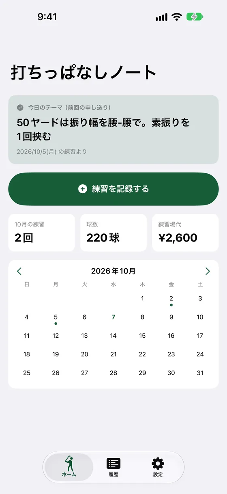
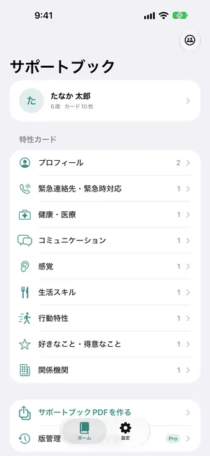
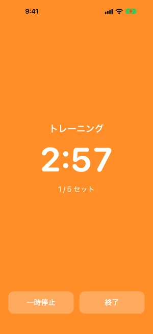
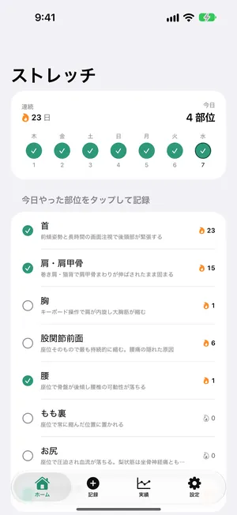
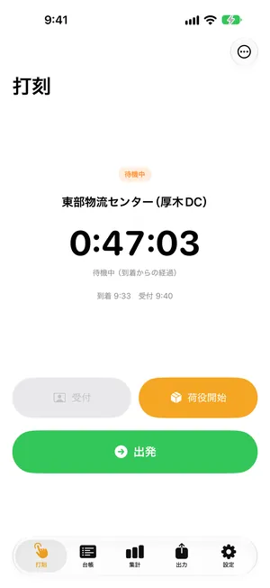
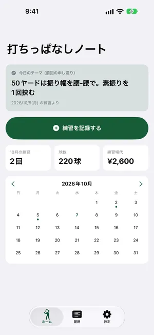
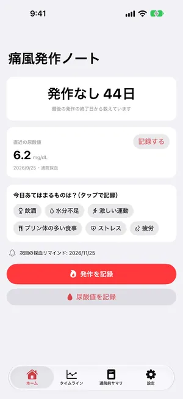
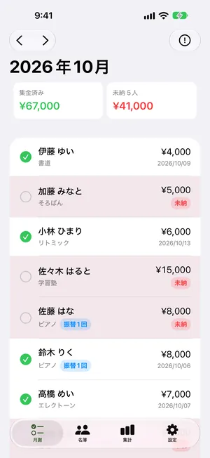
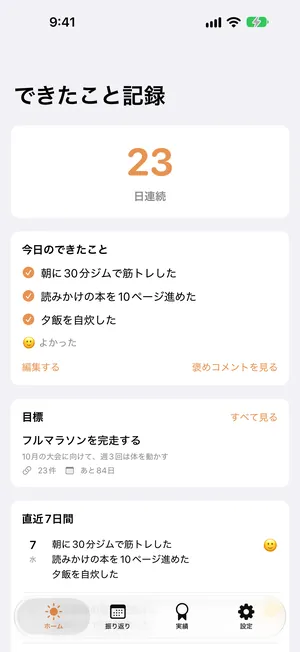

アプリ
-
-
現在開発中
サポートブックメーカー
サポートブックメーカーは、発達障害・障害のあるお子さまの特性や、まわりにお願いしたい対応を記録し、先生や支援者に渡すための「サポートブック」をスマホだけで作れるアプリです。

-
App Store 公開準備中
ジムタイマー
ジムタイマーは、トレーニングと休憩の切り替えを、合図の音で知らせるインターバルタイマーです。音楽や動画を流したまま、画面を見なくても切り替わりが分かります。

-
App Store 公開準備中
ストレッチ習慣ノート
ストレッチ習慣ノートは、ストレッチをした部位を記録して、続けた日数を部位ごとに見られるアプリです。動画やレッスンはありません。やったかどうかと、伸びた感じだけを残します。

-
App Store 公開準備中
荷待ちタイマー
荷待ちタイマーは、トラックドライバーが荷主先での荷待ち・荷役の時間を、待っている間にワンタップで記録するアプリです。乗務記録に書き写すための月次の明細を、PDFとCSVで出せます。

-
App Store 公開準備中
打ちっぱなしノート
打ちっぱなしノートは、ゴルフ練習場での練習を「言葉」で残すアプリです。球数や飛距離の数値は記録せず、今日の課題・気づきと、次回への申し送りを書き残します。前回の申し送りは次の練習日の朝に通知で届き、練習場に着く前に今日やることが決まります。

-
App Store 公開準備中
痛風発作ノート
痛風発作ノートは、痛風の発作と、採血で測った尿酸値を記録して、同じ時間軸に並べて見られるアプリです。診察のときに「最近の発作は？」と聞かれて、思い出せずに困らないための記録帳です。

-
App Store 公開準備中
月謝ふりかえ帳
月謝ふりかえ帳は、自宅や教室でピアノ・書道・そろばん・英会話などを教える先生が、月謝の入金と振替の残り回数を手元で記録するアプリです。保護者や生徒がアプリを入れる必要はありません。先生のiPhone1台で使えます。

-
現在開発中
できたこと記録
できたこと記録は、寝る前に「今日できたこと」を3つまで書き留めて、続けた日数や振り返りで小さな成功を積み上げていくアプリです。長い日記は要りません。短い一言を3つだけ残します。
